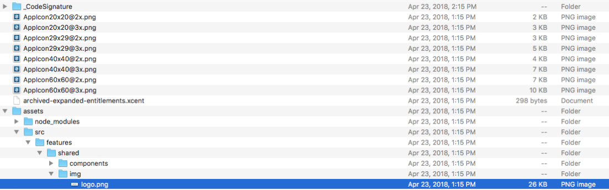
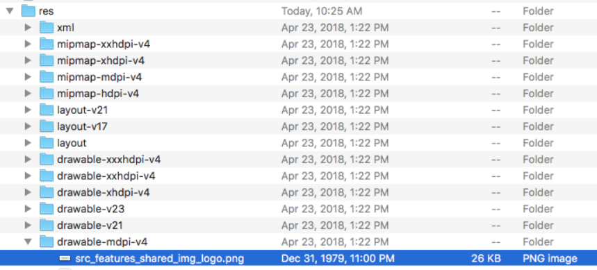

For customers re-signing the application, we provide unsigned builds.
This topic provides information on:
Store your unsigned EMS Mobile App in a new or empty directory.
Change the extension of the app to .zip. (e.g., IPhone.App-44.1.xxx-unsigned.ipa -> IPhone.App-44.1.xxx-unsigned.zip.)
Un-compress/expand the new zip file.
To set a custom logo, navigate to Assets > SRC > Features > Shared > IMG.

Replace the logo.png file.
Rezip all of the extracted files above.
Give the new zip file an ipa extension.
Using a Mac computer, install fastlane.
sudo gem install fastlane
Login to https://developer.apple.com and switch to team "Your Team Name."
Download your teams Distribution provisioning profile.
Double click it to install it. This file should exist on your system:
~/Library/MobileDevice/Provisioning Profiles/<a guide for your provisioning profile>.mobileprovision
Get your team's existing .p12 file with the cert and private key combined, and then import that into Keychain (by double-clicking it) and then entering the password.
When the cert is installed successfully you should see iPhone Distribution: <Your Team Name> in your Keychain, with a private key.
Assuming you have:
fastlane installed on your Mac.
the cert & private key installed in Keychain
the provisioning profile mentioned above in: ~/Library....mobileprovision
Resign your target ipa with this command:
fastlane run resign \
ipa:path/to/your/file.ipa \
signing_identity:"iPhone Distribution: <Your Team Name>" \
provisioning_profile:$HOME/Library/MobileDevice/ Provisioning Profiles/<your profile GUID>.mobileprovision \
display_name:EMS-Resigned
If you want a bash script that will do this, copy this into a file (e.g., resign_enterprise.sh):
#!/bin/bash
IPA=relative/path/to/file.ipa
IDENTITY="iPhone Distribution: <Your Team Name>"
PROFILE=$HOME/Library/MobileDevice/Provisioning Profiles/ <your profile GUID>.mobileprovision
DISPLAY_NAME=EMS-Resigned
fastlane run resign ipa:"$IPA" signing_identity: "$IDENTITY" provisioning_profile:"$PROFILE" display_name: $DISPLAY_NAME
Store your unsigned EMS Mobile App in a new or empty directory.
Change the extension of the app to .zip. (e.g., IPhone.App-44.1.xxx-unsigned.ipa -> IPhone.App-44.1.xxx-unsigned.zip.)
Un-compress/expand the new zip file.
To set a custom logo, navigate to RES > Drawable-mdpi-v4.

Replace the src_features_shared_img_logo.png file.
Rezip all the extracted files above.
Assets, Res, and AndroidManifest.xml are top-level files in an .apk. Please ensure you are zipping the correct files.
This CLI command will zip all the files in the current directory into a new zip file in the parent directory:
zip -qr ../ems-custom-44.1.xxx.zip ./*
Give the new zip file an apk extension (e.g., myapp.zip -> myapp.apk).
Sign the new apk file.
The script below is what EMS uses to sign the EMS Mobile App. Please adjust for your needs:
#!/bin/bash
APK_TO_SIGN=$1
APK_OUTPUT=$2
EMS_APK_KEYSTORE_PATH=path/to/your/app.keystore
jarsigner -verbose \
-sigalg $EMS_APK_SIG_ALG \
-digestalg $EMS_APK_DIGEST_ALG \
-storepass $EMS_APK_KEYSTORE_PASS \
-keystore $EMS_APK_KEYSTORE_PATH \
$APK_TO_SIGN $EMS_APK_ALIAS_NAME
zipalign 4 $APK_TO_SIGN $APK_OUTPUT
EMS recommends that you use an image with a 3:1 aspect ratio in order to ensure that the image will be properly rendered by the application.